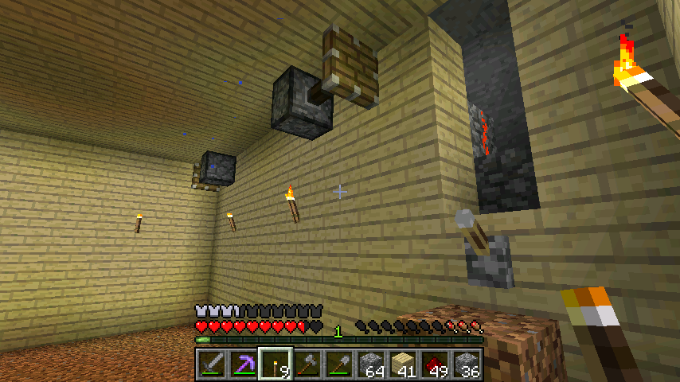

首页
上一页
1
2
3
3
4
5
6
7
8
下一页
末页
defanive2
无尽黑夜
14
吃完腐肉进入饥饿状态，不过只要你什么都不做，饥饿条就不会减
饥饿状态只是增加了饥饿条减少的速度，所以什么都不做的话腐肉其实还是不错的食物的
90楼
2012-08-02 19:17
defanive2
无尽黑夜
14
1.3的新东西，僵尸破门的时候门会显示裂痕
如果是hard模式就真的能够把门破了
91楼
2012-08-02 19:19
defanive2
无尽黑夜
14
出去寻找更多白桦木的时候找到了初期挖煤的一个小洞 = =
里面连接着一个洞穴，等到有时间的时候就去玩玩
93楼
2012-08-02 19:21
defanive2
无尽黑夜
14
甘蔗场已经开始起色了，等铺满就可以坐等收成
有时间了会给水源铺上半石阶，这个对甘蔗场有很好的辅助作用
打下来的甘蔗不会掉入水中，人也不需要在水中慢慢捡起掉落的甘蔗
可以不回到主路跨越沟壑
荷叶也可以起到相应的作用，不过要去沼泽地收集
另外一个是，荷叶是不可再生资源，应该适当使用，而石头则不需担心
94楼
2012-08-02 19:24
defanive2
无尽黑夜
14
小麦场还正在挖建中，铺白桦木也是一个大工程
当然会有一个一键水流收集产物系统，不过要先把主体建好再说
95楼
2012-08-02 19:26
defanive2
无尽黑夜
14
好了，去吃饭，回来打的时候再慢慢更新
小麦场弄好之后，打算弄养牛场，然后进行一定的挖矿
其实最期待的是能找到1.3里面的Temple，除了见识一下，箱子里面的资源很有吸引力，而且建筑本身也有很多资源
当然能找到一个刷怪笼也是很不错的，僵尸可以做经验塔，骷髅、蜘蛛都可以做资源塔或者经验塔，至于苦力怕的火药倒是没什么吸引力
96楼
2012-08-02 19:29
defanive2
无尽黑夜
14
出去逛一下镇子，回来继续直播
99楼
2012-08-02 20:13
defanive2
无尽黑夜
14
回来了，我来继续打MC
102楼
2012-08-02 22:58
defanive2
无尽黑夜
14
把周围的石头都挖了准备填木板。。
PS这么多白桦木板，周围的白桦树都快砍完了。。
等是时候了就要重新种了，或许开个植树场不错
103楼
2012-08-02 23:31
defanive2
无尽黑夜
14
装潢好了，看起来很不错
准备装上一大片玻璃屏遮住整个农地只留一个口进，这样看起来就像高科技一点的温室了
104楼
2012-08-02 23:33
defanive2
无尽黑夜
14
挖矿不是很用功，资源不多，不过做这个农场够用了
105楼
2012-08-02 23:44
defanive2
无尽黑夜
14
甘蔗场可以收了
106楼
2012-08-02 23:47
defanive2
无尽黑夜
14
摆好活塞在四个角落，作为水流控制
108楼
2012-08-03 00:24
defanive2
无尽黑夜
14

铺红石电路
109楼
2012-08-03 00:25
defanive2
无尽黑夜
14
电路也简单就直接一条线铺过去就好了，不过要注意把水源给塞死
110楼
2012-08-03 00:27
defanive2
无尽黑夜
14
放了水源之后，将产物都冲入中心水源
112楼
2012-08-03 00:28
defanive2
无尽黑夜
14
关闭之后活塞堵住了，嗯看起来不错
113楼
2012-08-03 00:29
defanive2
无尽黑夜
14
盖上玻璃屏，嗯看起来很不错，不过中心光源稍欠缺，加光源
114楼
2012-08-03 00:30
defanive2
无尽黑夜
14
加上南瓜灯，种上一组种子
115楼
2012-08-03 00:31
defanive2
无尽黑夜
14
这个是小麦的出口，是在农场的下一层
农场中心有个水源，从水源往下挖一直带领水流到这个出口即可
这样所有的小麦都会顺着水流到这个出口
（内部截了一张图但是不知道为什么没截成功。。）
116楼
2012-08-03 00:45
defanive2
无尽黑夜
14
同样是白桦木板装潢一下
117楼
2012-08-03 00:46
defanive2
无尽黑夜
14
楼上和楼下，小麦场彻底弄好了！
接下来等收成
118楼
2012-08-03 00:48
defanive2
无尽黑夜
14
接下来要做什么呢，好像没什么做我还是去睡觉吧，明天接着打
明天可以把农场给做了，不过要引动物比较麻烦
到现在都没见到过一只羊，所以到现在都没睡过觉
明天再说吧，大家晚安
PS 王皓输了，唉
120楼
2012-08-03 00:53
defanive2
无尽黑夜
14
昨晚又看了一下wiki，发现了一个1.3的新东西
发射器可以把水桶或岩浆桶放进去，发射时将会在发射器前一个放置水源或岩浆源
如果发射器里面是空桶，则会把发射器前的水源或者岩浆源收回到铁桶里面
这个新功能看起来很碉堡，我们先来小试一下，修改一下黑曜石生成器
126楼
2012-08-03 15:35
defanive2
无尽黑夜
14
稍微修改成这样，可以用了，比起用水桶手动加和收岩浆要方便很多
127楼
2012-08-03 15:36
defanive2
无尽黑夜
14
如果没记错的话，这也是1.3的新东西
拉杆可以倒置的放在方块上了，这个对某些红石设计肯定是有益的
128楼
2012-08-03 15:38
defanive2
无尽黑夜
14
不过当然，这个黑曜石机的话还是用按钮比较好
PS 从鹅卵石烧制成原石的过程中，每烧制10个可以获得1XP
虽然少了点不过也算是烧制奖励。。
129楼
2012-08-03 15:39
defanive2
无尽黑夜
14
去吃点东西，一会再继续
打算先弄农场，然后去高山biome里面挖绿宝石（实际不值得，不过就当是体验1.3）
130楼
2012-08-03 15:40
defanive2
无尽黑夜
14
收获了甘蔗场，给水源铺上石阶
131楼
2012-08-03 16:14
defanive2
无尽黑夜
14
阴雨天，打算把对面这块地弄平，做农场
132楼
2012-08-03 16:31
首页
上一页
1
2
3
3
4
5
6
7
8
下一页
末页